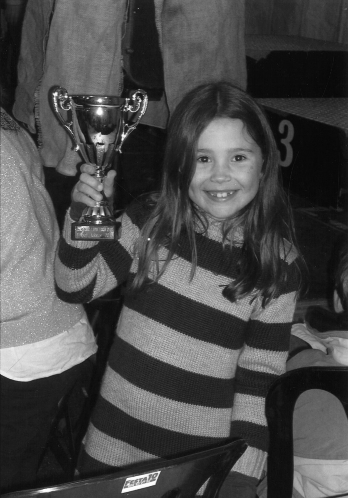
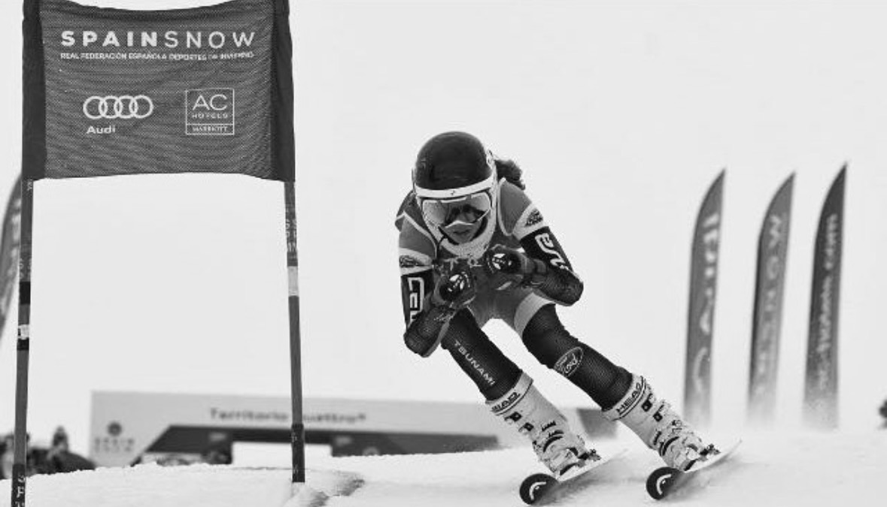
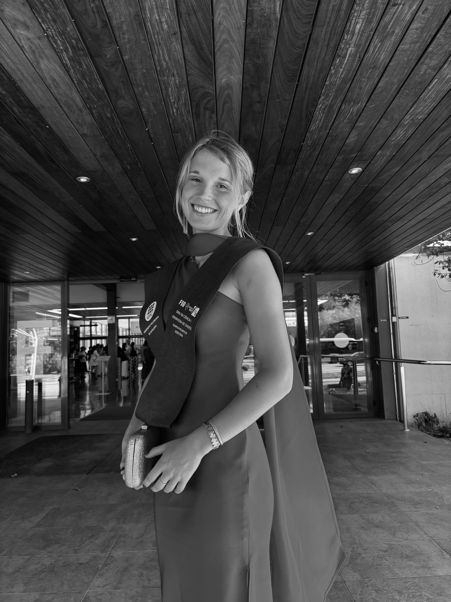
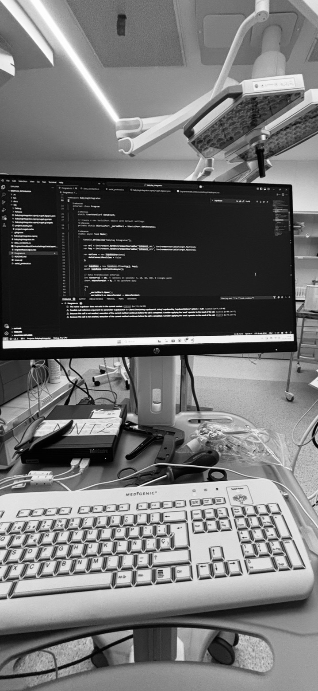
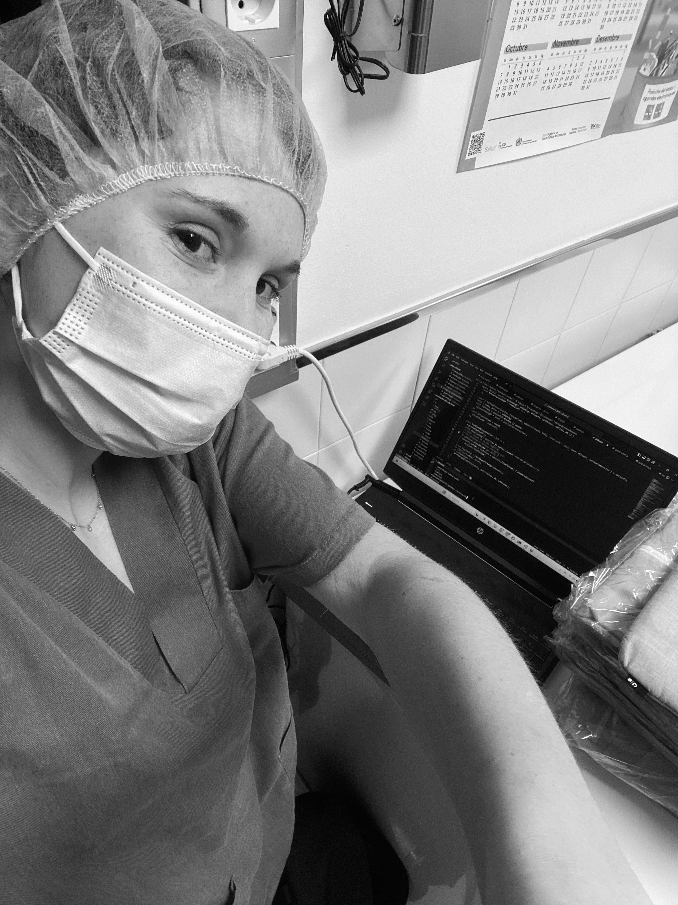
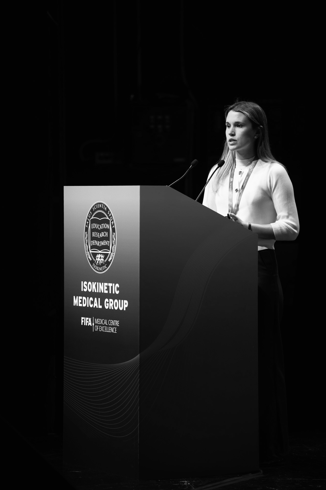

Anna Ramon
Hinojosa












Trusted by


Production systems, real users, measurable outcomes.
Entrepreneurs First, San Francisco.
Entrepreneurship Learn more
Building the next company, from scratch.
Accepted into Entrepreneurs First's The Bridge. One of the world's most selective talent investor programs, bringing together exceptional technical founders to build companies from scratch. Backed by founders including Patrick and John Collison, Reid Hoffman, Tom Blomfield, Sara Clemens, and Nat Friedman. I lived in a hacker house in San Francisco with 60 other founders.
Made of Genes
Health Optimization
Multi-Omic Data for Precision Medicine applied to sports performance.
Predicting injuries before it happen. 53% boost in detection sensitivity, enabling earlier interventions that directly protect athletes. Collaborating with FC Barcelona and top European clubs fusing wearable, GPS, biomarker, and genetics data.
BCNatal Fetal Medicine Research Center
Healthcare & Clinical Decision Support
Developing the first Artificial Placenta in Europe. Learn more
I developed the AI behind a groundbreaking neonatal ICU project. Dosage errors fell from 12.49% to 0.03%. Clinicians query protocols in natural language. Used daily in real ICU environments.
Amalfi Analytics
Healthcare — Early Disease Detection
Catching Alzheimer's earlier, from a blood draw.
I collaborated with Roche discovering new biomarkers for early detection of Alzheimer's disease.
Powered by Barça Innovation Hub
Teaching & Mentoring
Teaching the analytics behind the game.
Universitat Politecnica de Catalunya (UPC)
Teaching & Mentoring
100+ students, one production mindset.
Personal Project, Family Business
Stock Management System
Replacing a spreadsheet with a real system.
Not what tools I use, how I think.
From raw data to production. I don't hand off, I build the pipeline, train the model, design the evaluation, deploy it, and iterate. The whole thing.
My models are used by doctors and coaches, people who don't read confusion matrices. I design interpretable outputs and evaluation frameworks that non-technical staff can trust and act on.
I build systems that learn from real user interactions, not models that ship and stagnate. Continuous evaluation, real-world feedback, constant iteration.
Wearables, GPS, blood biomarkers, genetics — the data I work with is messy, high-frequency, and multimodal. I build pipelines that extract what matters from real-world chaos.
Universitat Politecnica de Catalunya (UPC)
Pontificia Universidad Catolica de Chile
Sharing knowledge, building community.
Presenting two research projects at the world's leading sports medicine congress:
Best Women's Football Abstract. Peer-review award Award Publication — Barça Innovation Hub →
Presented research on the Intelligent Assistant System developed for ICU teams within the BCNatal CaixaResearch Artificial Placenta project. The system provides real-time decision support for clinical staff, significantly reducing human error and accelerating critical workflows.
An inspiring event celebrating the contributions of women in STEM and healthcare — advancing a future where data and AI enhance healthcare for all.
Delivered a Masterclass at the Johan Cruyff Institute in Barcelona to students from Colombia's Escuela Nacional del Deporte, explaining how AI drives injury prevention and performance optimization through data analysis. A session connecting science, sports, and innovation.
View post →What drives me outside the terminal.
For me, sport has never been just a hobby, it's how I cope with the day to day, how I reset, how I push through. I run, bike, swim, and hike. I've completed several half marathons. I push my limits because that's where growth lives. Sport teaches me resilience, discipline, and consistency, the same principles that drive my engineering work.
I've worn a wearable for years: tracking heart rate, sleep, training load, recovery. I don't just build AI for athletes; I self-analyze my own metrics to adapt my training, test hypotheses on myself, and understand from the inside what it means to turn biometric data into better decisions. That lived experience makes me a sharper engineer.
I've mentored 100+ students and teach across postgraduate programs. Explaining complex ideas simply is a superpower, it makes me a better engineer, communicator, and teammate.
I'm looking for my next big challenge — building at the intersection of AI, health, and human performance. If you're working on something ambitious, especially in the US or EU startup ecosystem, I'd love to talk.